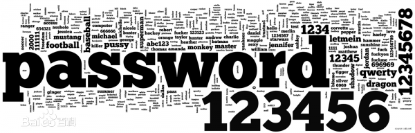

网络安全法/渗透测试
《中华人民共和国网络安全法》是为了保障网络安全，维护网络空间主权和国家安全、社会公共利益，保护公民、法人和其他组织的合法权益，
促进经济社会信息化健康发展，制定的法律。
渗透测试，是为了证明网络防御按照预期计划正常运行而提供的一种机制。
不妨假设，你的公司定期更新安全策略和
程序，时时给系统打补丁，并采用了漏洞扫描器等工具，
以确保所有补丁都已打上。如果你早已做到了这些，为什么还要请
外方进行审查或渗透测试呢？
因为，渗透测试能够独立地检查你的网络策略，换句话说，就是给你的系统安了一双眼睛。而且，
进行这类测试的，都是寻找网络系统安全漏洞的专业人士。
环境工具
虚拟机：虚拟机（Virtual Machine）指通过软件模拟的具有完整硬件系统功能的、运行在一个完全隔离环境中的完整计算机系统。
虚拟系统通过生成现有操作系统的全新虚拟镜像，它具有真实windows系统完全一样的功能，进入虚拟系统后，
所有操作都是在这个全新的独立的虚拟系统里面进行，可以独立安装运行软件，保存数据，拥有自己的独立桌面，
不会对真正的系统产生任何影响 ，而且具有能够在现有系统与虚拟镜像之间灵活切换的一类操作系统。
VMware下载
虚拟机安装教程
Python：：Python是一种计算机程序设计语言。
是一种动态的、面向对象的脚本语言，最初被设计用于编写自动化脚本(shell)，
随着版本的不断更新和语言新功能的添加，越来越多被用于独立的、大型项目的开发。
Pyhon环境安装
JAVA：Java是一门面向对象编程语言，不仅吸收了C++语言的各种优点，
还摒弃了C++里难以理解的多继承、指针等概念，因此Java语言具有功能强大和简单易用两个特征。
JAVA环境安装
工具介绍
awvs：AWVS是一个自动化的Web安全测试工具，它可以扫描Web站点和Web应用。
AWVS可以**快速扫描**SQL注入，XSS攻击，目录遍历，文件入侵，PHP代码注入、代码执行等等。
Nessus：Nessus是著名信息安全服务公司tenable推出的一款漏洞扫描与分析软件，
号称是“世界上最流行的漏洞扫描程序,全世界超过75,000个组织在使用它”。
Nessus目前分为四个版本：Nessus Home、Nessus Professional、Nessus Manager、Nessus Cloud。
wireshark：wireshark是非常流行的网络封包分析软件，功能十分强大。
可以截取各种网络封包，显示网络封包的详细信息。使用wireshark的人必须了解网络协议，否则就看不懂wireshark了。
burp：用于攻击web 应用程序的集成平台，
包含了许多工具。Burp Suite为这些工具设计了许多接口，以加快攻击应用程序的过程。所有工具都共享一个请求，
并能处理对应的HTTP 消息、持久性、认证、代理、日志、警报。
漏洞利用指的是利用程序中的某些漏洞，
来得到计算机的控制权（使自己编写的代码越过具有漏洞的程序的限制，从而获得运行权限）。
常用的漏洞利用工具：御剑扫描器、sqlmap、菜刀等。
Metasploit：是一款开源的安全漏洞检测工具，可以帮助安全和IT专业人士识别安全性问题，
验证漏洞的缓解措施，并管理专家驱动的安全性进行评估，提供真正的安全风险情报。
渗透测试思路科普
确定目标、收集网站信息、google黑客、端口探测、爬虫爬网站、web框架漏洞、暴力破解、撞库、弱口令、中间件配置不当、
操作系统或中间件解析漏洞、php的那些老毛病。
采用多地ping、ping xxx.com、ping二级域名，甚至三级域名扫描爆破、找国外冷门DNS、查看域名历史解析记录、让服务器主动连接我们、
拿CDN服务器 找出真实IP。
Google Hacking的含义原指利用Google Google搜索引擎搜索信息来进行入侵的技术和行为。
现指利用各种搜索引擎搜索信息来进行入侵的技术和行为。
由于谷歌被大陆屏蔽,大家可以使用谷歌翻墙搜索 http://soso.myhack58.com
site:www.myhack58.com intext:管理 无利用
site:www.myhack58.com inurl:login(登陆的页面)
site:www.myhack58.com intitle:后台 (很容易的就找到了网站的后台登陆口)
site:myhack58.com intext:管理|后台|登陆|用户名|密码|验证码|系统|帐号|manage|admin|login|system
site:myhack58.com inurl:login|admin|manage|manager|admin_login|login_admin|system
site:myhack58.com intitle:管理|后台|登陆|
site:heimian.com intext:验证码
在黑客术语里面，”脱库“是指黑客入侵有价值的网络站点，把注册用户的资料数据库全部盗走的行为，因为谐音，也经常被称作“脱裤”。
owasp top 10科普
TOP1-注入
TOP2-失效的身份认证和会话管理
TOP3-跨站XSS
TOP4-不安全的对象直接引用
TOP5-伪造跨站请求（CSRF）
TOP6-安全误配置
TOP7-限制URL访问失败
TOP8-未验证的重定向和转发
TOP9-应用已知脆弱性的组件
TOP10-敏感信息暴露
所所谓SQL注入，就是通过把SQL命令插入到Web表单提交或输入域名或页面请求的查询字符串，
最终达到欺骗服务器执行恶意的SQL命令。具体来说，它是利用现有应用程序，将（恶意的）SQL命令注入到后台数据库引擎执行的能力，
它可以通过在Web表单中输入（恶意）SQL语句得到一个存在安全漏洞的网站上的数据库，而不是按照设计者意图去执行SQL语句。
比如先前的很多影视网站泄露VIP会员密码大多就是通过WEB表单递交查询字符暴出的，这类表单特别容易受到SQL注入式攻击．
注入方法有： access注入、cookie注入、mysql注入、报错注入、宽字节注入。
上传漏洞/解析漏洞/编译器漏洞
这个漏洞在DVBBS6.0时代被黑客们利用的最为猖獗，利用上传漏洞可以直接得到WEBSHELL，危害等级超级高，
现在的入侵中上传漏洞也是常见的漏洞。
导致该漏洞的原因在于代码作者没有对访客提交的数据进行检验或者过滤不严，可以直接提交修改过的数据绕过扩展名的检验。
简单的说，解析漏洞就是web容器将其他格式的文件解析为可执行脚本语言，攻击者可以利用这个特征去执行一些攻击行为。
通常会出现解析漏洞的web容器有IIS 6.0、Nginx、Apache。
使用IIS6.0的服务器，一般是Windows server 2003，解析语言是asp，不能解析aspx语言。
比如常见的编辑器漏洞有:
ewebeditor、
ewebeditornet、
fckeditor、
editor、
southidceditor、
SouthidcEditor、
bigcneditor、
XSS/CSRF
XSS 全称(Cross Site Scripting) 跨站脚本攻击， 是Web程序中最常见的漏洞。
指攻击者在网页中嵌入客户端脚本(例如JavaScript), 当用户浏览此网页时，脚本就会在用户的浏览器上执行，从而达到攻击者的目的.
比如获取用户的Cookie，导航到恶意网站,携带木马等。
XSS分类：1. 反射型XSS、2.存储型XSS、DOM型。
CSRF（Cross-site request forgery），中文名称：跨站请求伪造，也被称为：one click attack/session riding，缩写为：CSRF/XSRF。
你这可以这么理解CSRF攻击：攻击者盗用了你的身份，以你的名义发送恶意请求。CSRF能够做的事情包括：以你名义发送邮件，
发消息，盗取你的账号，甚至于购买商品，虚拟货币转账......造成的问题包括：个人隐私泄露以及财产安全。
CSRF漏洞现状：CSRF这种攻击方式在2000年已经被国外的安全人员提出，但在国内，直到06年才开始被关注，
08年，国内外的多个大型社区和交互网站分别爆出CSRF漏洞，如：NYTimes.com（纽约时报）、Metafilter（一个大型BLOG网站），
YouTube和百度HI......而现在，互联网上的许多站点仍对此毫无防备，以至于安全业界称CSRF为“沉睡的巨人”。
常见的几种攻击类型：1.GET类型的CSRF、2.POST类型的CSRF。
文件包含漏洞
随着网站业务的需求，程序开发人员一般希望代码更灵活，所以将被包
含的文件设置为变量，用来进行动态调用，但是正是这种灵活性通过动态变
量的方式引入需要包含的文件时，用户对这个变量可控而且服务端又没有做
合理的校验或者校验被绕过就造成了文件包含漏洞。
<?php
$file = $_GET['file'];
if(isset($file)){
include("$file");
}else{
echo "file fail";
}
远程的文件名不能为php可解析的扩展名(php、php5..)，而且php.ini中allow_url_fopen和allow_url_include为On才可以。
命令执行
low级别：
<?php
if(isset($_POST['submit'])){
$target = $_REQUEST['ip'];
if( stristr( php_ uname( 's' ), 'Windows NT" ) ) {
$cmd = shell_ exec( ' ping i . starget ):
}
else {
$cmd = shell_ .exec(' ping -c4'.starget):
}
echo " <pre> {$cmd}</pre>" :
}
?>
medium级别：
<?php
if( isset( $_ _POST[ ' Submit ]) ){
$target = $_ REQUEST[ . ip ]:
$substitutions = array{
'&&' => '',
':' => '',
);
high级别：
if(isset($_POST['submit'])){
$target = $_REQUEST['ip'];
$substitutions =array(
'&' => '',
';' => ''
'|' => ''
'-' => ''
'$' => ''
'(' => ''
')' => ''
'`' => ''
'||' => ''
);
逻辑漏洞
逻辑漏洞是指由于程序逻辑不严或逻辑太复杂，导致一些逻辑分支不能够正常处理或处理错误，
一般出现在任意密码修改（没有旧密码验证）、越权访问、密码找回、交易支付金额等。
越权 本质：某账户拥有了超出它应有权限范围外的操作许可权。
分类：（1）水平越权、（2）垂直越权
爆破 1、验证码、2、频率试错控制。
撞库 撞库是黑客通过收集互联网已泄露的用户和密码信息，生成对应的字典表，尝试批量登陆其他网站后，
得到一系列可以登录的用户。很多用户在不同网站使用的是相同的帐号密码，因此黑客可以通过获取用户在A网站的账户从而尝试登录B网址，这就可以理解为撞库攻击。
如果撞库攻击成功，那么库中的大量用户就会面临账号被盗取、信息泄露等严重问题。
除此之外，还有数据修改。
弱口令与万能密码
弱口令(weak password) 没有严格和准确的定义，
通常认为容易被别人（他们有可能对你很了解）猜测到或被破解工具破解的口令均为弱口令。弱口令指的是仅包含简单数字和字母的口令，
例如“123”、“abc”等，因为这样的口令很容易被别人破解，从而使用户的计算机面临风险，因此不推荐用户使用。
在登陆后台时，接收用户输入的Userid和Password数据，并分别赋值给user和pwd，
然后再用 sql="select * from admin where username="&user&" and password="&pwd&"" 这句来对用户名和密码加以验证。
以常理来考虑的话，这是个很完整的程序了，而在实际的使用过程中，整套程序也的确可能正常使用。但是如果Userid的值和password的值被赋于：
safer’ or’1’=’1’ 这时，sql="select * from admin where username="&user&" and password="&pwd&""
就成了：sql="select * from reg where user=safer’ or’1’=’1’ and pass=safer’ or’1’=’1’这样的问题。
我们应当注意这样一件事情，那就是无论查询语句怎么写我们所输入的内容都是要被单引号引起来的，
那么我们现在尝试利用这样的特点来构造新的“万能密码”登录

敏感信息泄露
数据库备份、网站备份、后天路径、
数据库地址泄露、心脏滴血泄露、组件版本信息泄露、报错页面信息泄露（中间件、网站路径）文本文件。
那么我们现在尝试利用这样的特点来构造新的“万能密码”登录
一些网站的业务需求，可能提供文件下载和查看的功能，如果对用户查看或者下载的文件不做限制，
就可以查看或者下载任意的文件，可以是源代码、敏感文件等。
文件下载代码原理
<?php
$filename = $_GET['filename'];
echo '<h1>讲开始下载文件！</h1><br /><br />';
echo file_get_contents($filename);
header('Content-Type: imgage/jpeg');
header('Content-Disposition: attachment;
filename='.$filename);
header('Content-Lengh: '.filesize($filename));
？>
文件读取代码原理
<?php
@$filename = $_GET['filename’];
$message = file_get_contents('./data/'.$filename);
$title = basename($filename, '.md');
echo "<h1>{$title}</h1>";
echo "{$message}";
权限控制
指的是攻击者尝试访问与他拥有相同权限的用户的资源。攻击者可以根据接口参数中的id加1等操作，来获取其他用户的权限或数据。
垂直权限漏洞是指Web应用没有做权限控制，或仅仅在菜单上做了权限控制，导致恶意用户只要猜到了其他页面的URL，就可以访问或控制其他角色拥有的数据或页面，
达到权限提升的目的。
修复方案：只需要对url资源进行权限验证即可。
主要有两种情况：1. 没有用户登录，就可以直接访问系统页面；
2. 用户登录成功，但对于没有权限的页面或action；也可以直接访问。
对文件而言，具有执行文件的权限；对目录了来说该用户具有进入目录的权限。目录的只读访问不允许使用cd进入目录，必须要有执行的权限才能进入。只有执行权限只能进入目录，不能看到目录下的内容，要想看到目录下的文件名和目录名，需要可读权限。
11月4日，国外安全研究人员@antirez 公布Redis服务一例高危安全风险。其发现，Redis服务如果配置不当，结合SSH服务，可以直接获取服务器的ROOT权限。
服务器配置不当包括三部分：
Redis服务使用ROOT账户启动。
Redis服务无密码认证或者弱密码认证。
服务器开放SSH服务，允许密钥登录。
组件漏洞
组件漏洞包括：缓冲区溢出（远程、本地）、低版本的开源CMS、PHP CGI远程代码执行、PHPmyadmin、
IIS短文件名遍历、开源系统漏洞、stust2远程代码执行漏洞（S2-019/S2-037/S2-003/S2-045/S2-052）HTTPS未验证。
软件项目应该遵循下面的流程：
1，移除不使用的依赖，不需要的功能、组件和文档；
2，利用工具如 versions、DependencyCheck、retire.js等来持续的记录客户端和服务器以及它们的依赖库的版本信息；
3，对使用的组件持续监控如CVE和NVD等漏洞中心，可以使用自动化工具来完成此功能；
4，仅从官网渠道获取组件并且在有条件的情况下尽可能采用单一包来避免被恶意篡改的风险；
5，很多老的不再支持的库和组件并没有安全升级，这种情况下，可以考虑使用虚拟补丁技术去检测或保护。
源代码安全
随着互联网深入到各行各业，越来越多的应用系统、网站等被人类通过网络连接、访问。如何保障系统、
网站不会因黑客的恶意攻击而导致系统崩溃、数据泄露等安全问题，解决此问题的最根本的手段还是要回归到代码上面，只有写出的代码是安全的、
是无懈可击的、没有任何逻辑漏洞，才能杜绝一切安全问题。本文从以下几个方面讲述系统漏洞产生的原理及如何预防这些漏洞，做到代码安全。
内容比较浅显，不做深入阐释。
是指通过对他人软件的目标程序（比如可执行程序）进行“逆向分析、研究”工作，以推导出他人的软件产品所使用的思路、原理、结构、算法、处理过程、
运行方法等设计要素，某些特定情况下可能推导出源代码。反编译作为自己开发软件时的参考，或者直接用于自己的软件产品中。
一，svn 源码泄露
二， 网站源码压缩备份泄露
三， .git 源码泄露
四，GitHub 项目源码泄露
网站权限获取
1.所有语言都没有权限
2.登录数据库管理平台，进入phpMyadmin管理数据库平台
3.选定数据库=》点击***_admin_table表（表前缀根据安装时候设置，会有所不同）
=》浏览当前数据就是管理员与会员信息列表。、admin_id列就是用户名，选定一个用户点编辑
4.编辑admin_type。
webshell：webshell就是以asp、php、jsp或者cgi等网页文件形式存在的一种命令执行环境，
也可以将其称做为一种网页后门。黑客在入侵了一个网站后，通常会将asp或php后门文件与网站服务器WEB目录下正常的网页文件混在一起，
然后就可以使用浏览器来访问asp或者php后门，得到一个命令执行环境，以达到控制网站服务器的目的。
顾名思义，“web”的含义是显然需要服务器开放web服务，“shell”的含义是取得对服务器某种程度上操作权限。
webshell常常被称为入侵者通过网站端口对网站服务器的某种程度上操作的权限。由于webshell其大多是以动态脚本的形式出现，
也有人称之为网站的后门工具。
获取网站权限的方法有：大马、小马、shell。
提权
提高自己在服务器中的权限，就比如在windows中你本身登录的用户是guest，然后通过提权后就变成超级管理员，
拥有了管理Windows的所有权限。提权是黑客的专业名词，一般用于网站入侵和系统入侵中。
提升进程权限的流程如下：
1.使用OpenProcessToken获取需要提升权限的进程的“令牌”。
2.使用LookupPrivilegeValue函数，根据权限的“名称字符串”查找到权限在对应系统上的LUID。同一个权限在不同
系统上的LUID不同。
3.使用AdjustTokenPrivileges函数，向指定进程的“令牌”添加或删除权限。
当你与sudo一起运行任何命令时，它需要执行root权限，Linux会在sudoers文件中检查特定的用户名。
它的结论是，特定的用户名是否在sudoers文件列表中，如果不是，那么你不能使用sudo命令运行命令或程序。
根据sudo权限，root用户可以从所有终端执行，充当所有用户：ALL组，并运行ALL命令。
如果你（root用户）希望授予sudo权限给任何特定的用户，那么输入visudo命令将打开sudoers文件进行编辑。
在“用户权限规范”，你会看到默认root权限“ 根ALL =（ALL：ALL） ”，但在实际的，有标签的选项也可以是可选的。
权限维持
【web端权限维持】利用ADS隐藏webshell：
ADS
ADS（Advanced Design System）即先进设计系统，它为设备之间的通讯提供路由。
在TwinCAT PC 和Beckhoff 的CX、BX、BC 系列控制器中都包含TwinCAT 信息路由器。因此各个ADS 设备之间都能够交换数据和信息。
步骤：
制作步骤一：创建ADS隐藏文件
制作步骤二：文件包含
制作步骤三：绕过检测
除此之外，权限维持还包括系统权限维持以及隐藏后门。
内网安全
提起网络安全，人们自然就会想到病毒破坏和黑客攻击，
其实不然。常规安全防御理念往往局限在网关级别、网络边界（防火墙、漏洞扫描、防病毒、IDS）等方面的防御，
重要的安全设施大致集中于机房或网络入口处，在这些设备的严密监控下，来自网络外部的安全威胁大大减小。
相反，来自网络内部的计算机客户端的安全威胁却是众多安全管理人员所普遍反映的问题。
ARP（Address Resolution Protocol，地址解析协议）是一个位于TCP/IP协议栈中的网络层，负责将某个IP地址解析成对应的MAC地址。
基本功能：基本功能：ARP协议的基本功能就是通过目标设备的IP地址，查询目标设备的MAC地址，以保证通信的进行。
ARP攻击的局限性:
ARP攻击仅能在以太网（局域网如：机房、内网、公司网络等）进行。
无法对外网（互联网、非本区域内的局域网）进行攻击。
APT攻击
APT（AdvancedPersistent Threat）高级持续性威胁。是指组织(特别是政府)或者小团体利用先进的攻击
手段对特定目标进行长期持续性网络攻击的攻击形式。APT是黑客以窃取核心资料为目的，针对客户所发动的网络攻击和侵袭行为。
APT的攻击手法，在于隐匿自己，针对特定对象，长期、有计划性和组织性地窃取数据，
此类攻击行为是传统安全检测系统无法有效检测发现，前沿防御方法是利用非商业化虚拟机分析技术，对各种邮件附件、
文件进行深度的动态行为分析，发现利用系统漏洞等高级技术专门构造的恶意文件，从而发现和确认APT攻击行为。由于APT的特性，
导致难发现、潜在威胁大，一旦被攻击将导致企业、政府、医疗组织等等的大量数据被窃取，公司重要财务、机密被盗窃。
攻击者对内网信息比较感兴趣的点为：
1） 内网使用的浏览器信息，针对IE浏览器漏洞进行挂马攻击，水坑攻击。
2） 内网FLASH版本信息，主要进行挂马攻击，发送带有网马的链接攻击。
3） 内网使用的Java版本信息，进行网马攻击。
4） 内网使用的杀毒软件信息，对木马针对性的进行免杀。
5） 内网使用的Office版本信息，针对特定的office版本，制作相应的攻击样本。
6） 内网使用的Adobe Reader版本信息，主要用来在PDF中嵌入木马进行攻击。
7） 内网安装的常用软件信息，结合相应的软件漏洞进行相应漏洞攻击。
8） 内网IP地址信息以及内网的外网出口。
免杀科普
加冷门壳
举例来说，如果说程序是一张烙饼，那壳就是包装袋，可以让你发现不了包装袋里的东西是什么。比较常见的壳一般容易被杀毒软件识别，所以加壳有时候会使用到生僻壳，就是不常用的壳。去买口香糖你会发现至少有两层包装，所以壳也可以加多重壳，让杀毒软件看不懂。如果你看到一个袋子上面写着干燥剂、有毒之类的字你也许就不会对他感兴趣了吧，这就是伪装壳，把一种壳伪装成其他壳，干扰杀毒软件正常的检测。
加壳改壳
加壳改壳是病毒免杀常用的手段之一，加壳改壳原理是将一个木马文件加上upx壳或者其它壳后用lordpe将文件入口点加1，然后将区段字符全部去掉，然后用od打开免杀的木马在入口上下100字符内修改一些代码让杀毒软件查不出来是什么壳就不知道怎么脱就可以实现免杀的目的，但这种技术只有熟悉汇编语言的人才会，这种免杀方法高效可以一口气过众多杀软也是免杀爱好者应该学会的一种技术。
加花指令
加花是病毒免杀常用的手段，加花的原理就是通过添加加花指令（一些垃圾指令，类型加1减1之类的无用语句）让杀毒软件检测不到特征码，干扰杀毒软件正常的检测。加花以后，一些杀毒软件就检测不出来了，但是有些比较强的杀毒软件，病毒还是会被杀的。这可以算是“免杀”技术中最初级的阶段。
改程序入口点
修改程序入口点。
DDOS和CC
DDoS的攻击原理是：利用网络过载进行干扰或是阻碍正常的网络通讯，然后向香港服务器申请大量的请求，导致香港服务器超负荷运行。从而达到，阻断正常数据请求，也就是阻碍正常访客对香港服务器发出的正常请求。几种比较常见的DDoS攻击有ICMP flood，SYN flood，UDP flood，而SYN flood又是最常见的攻击方式，它是利用TCP协议设计中得缺陷（3次握手）进行的，在它攻击的时候会制造很多的伪ip源地址，然后向香港服务器发送大量的SYN包，之后香港服务器会返回ACK/SYN包，但是IP是伪造的，所以香港服务器是不会受到应答的，会重试3-5次，并且等待一个SYN time（一般是39秒到2分钟），如果超时则丢弃这个连接。
攻击者发送大量的这种伪造源地址的SYN请求，服务端会消耗很多的资源（CPU和内存）来处理这种半连接，同时还要对这些请求进行SYN/ACK重试，最后的结果就是香港服务器无暇理睬正常的连接请求，导致拒绝服务。这就是DDoS的攻击原理。
CC的前世是一个攻击程序，叫做fatboy，这是黑客为了挑战绿盟的一款防DDoS设备开发的，它应该算是一个应用层的DDoS，是发生在TCP3次握手完成之后，它发送的ip其实都是真的。但是应用层的DDoS比网络层的DDoS更厉害，而且现在的大部分商业anti-DDOS设备，在防御网络层的DDoS的效果较好，应对应用层的DDoS攻击目前是还没有有效的手段。其实CC的攻击原理也比较简单，就是对一些那些比较耗费资源应用页面不停的发出请求，从而达到消耗资香港服务器资源的目的，在web应用中，查询数据库，读写硬盘文件的等操作都是比较消耗资源的。